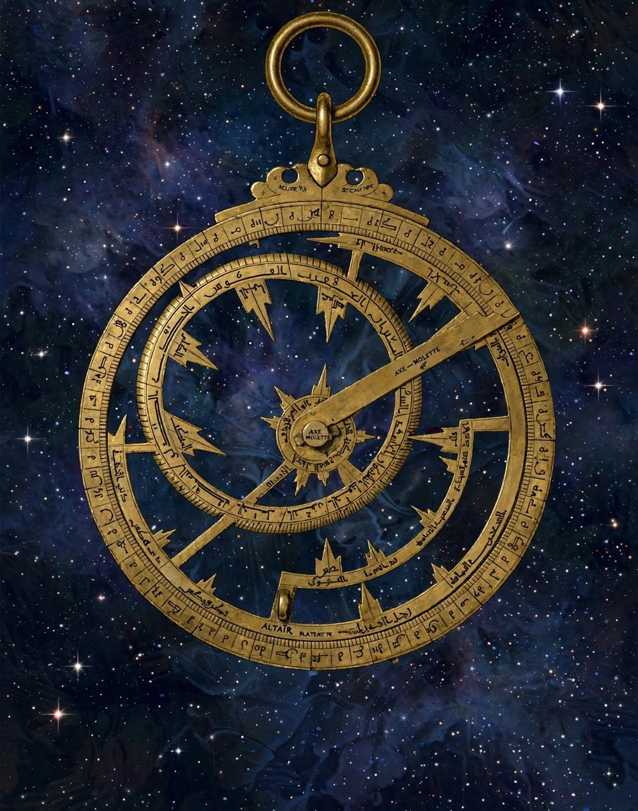
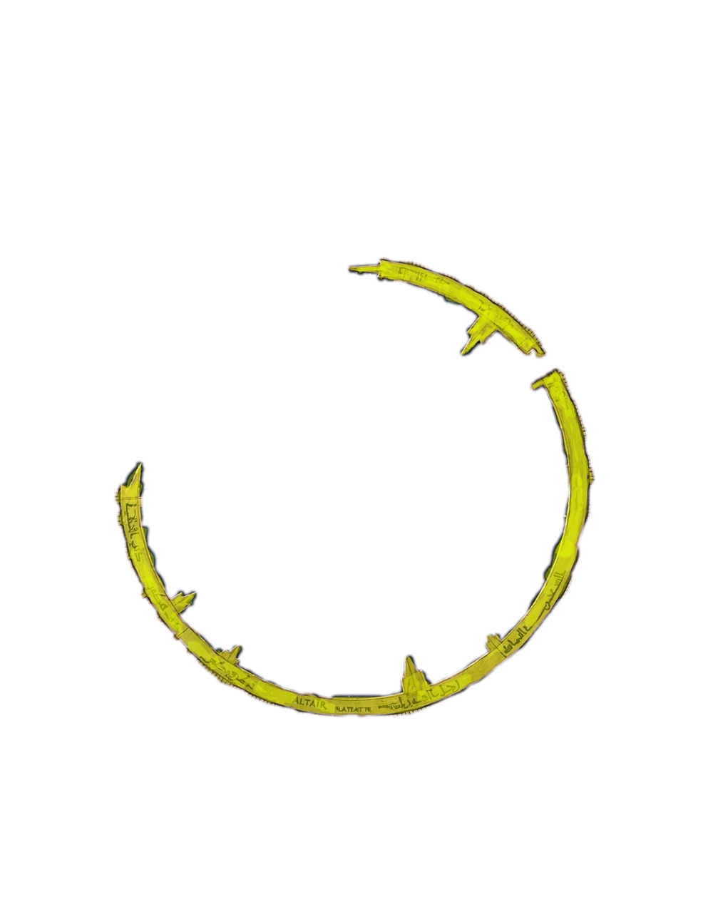
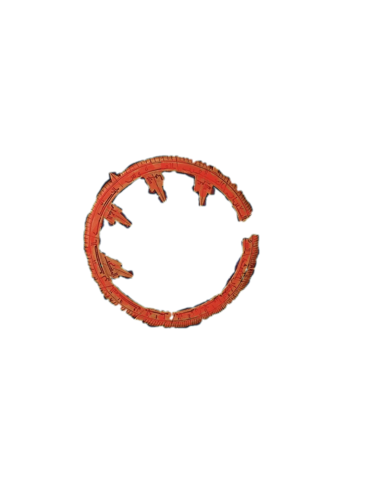
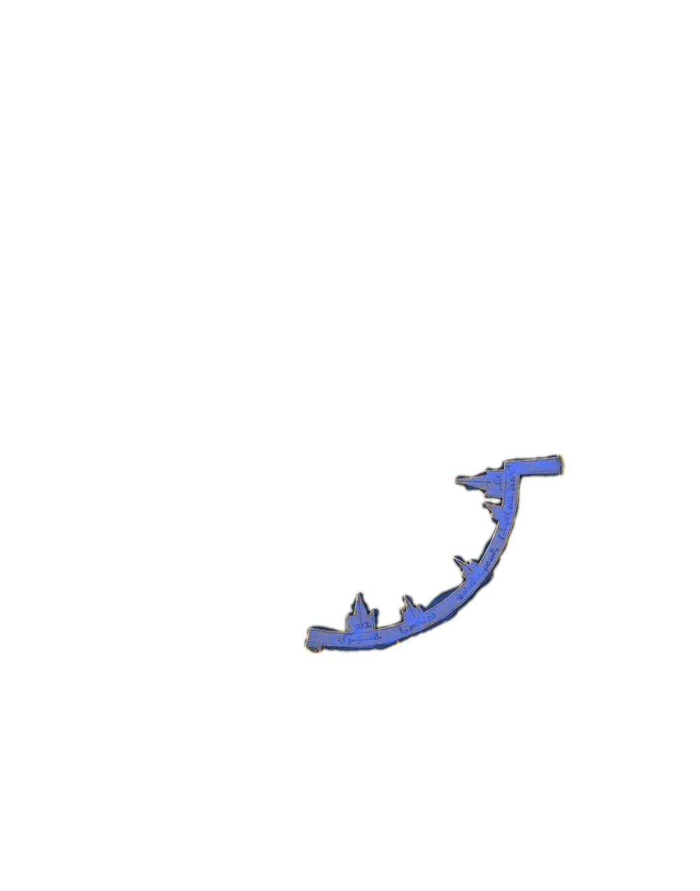
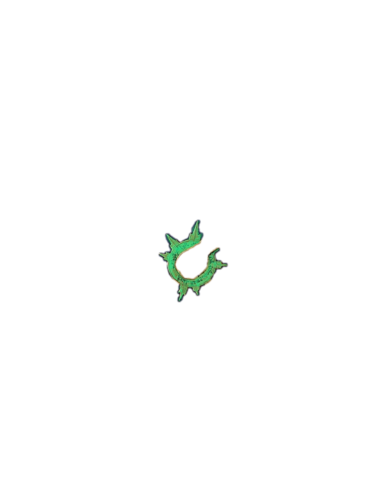
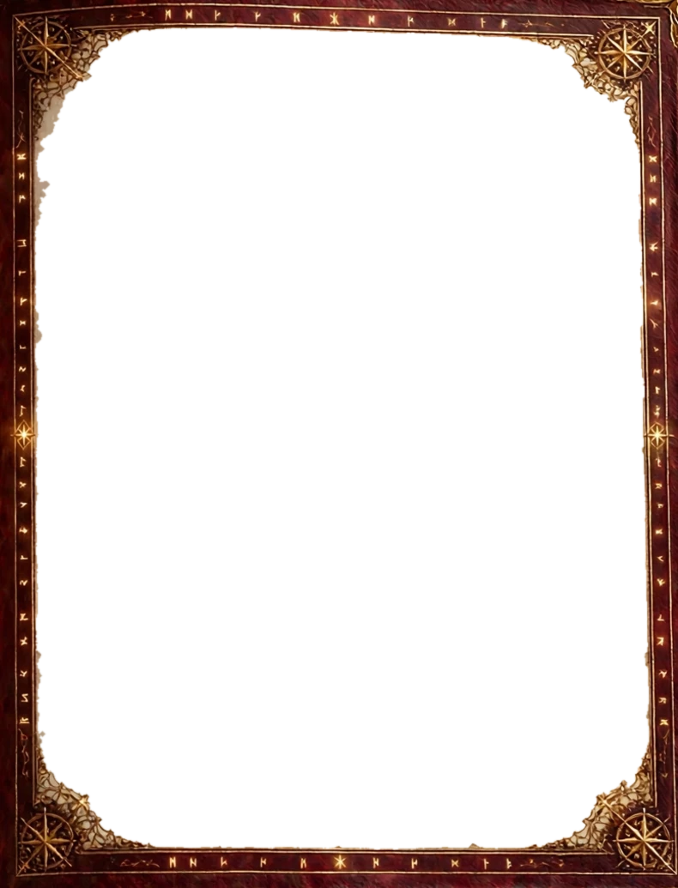

Les copies sont corrigées automatiquement. Déverrouille les évaluations, attribue des pièces d'or et suis la progression de chaque élève.
Clique sur « Actualiser ».
Aucune donnée pour le moment.
Clique sur « Actualiser ».